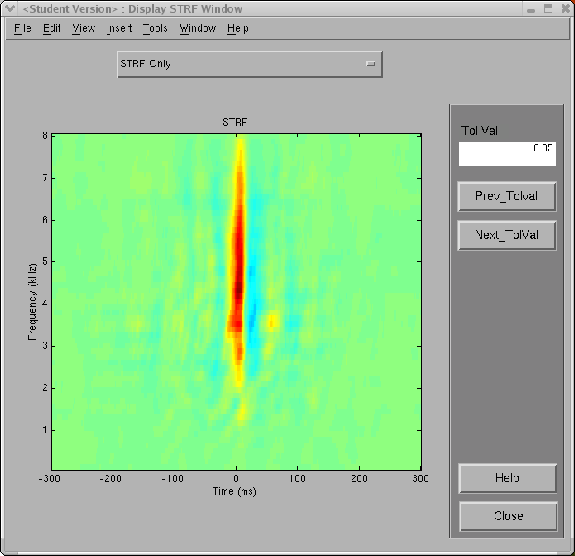

Next: Reference for STRFPAK's Modulation
Up: Estimating the STRF
Previous: Display StimStat
Contents
In the toolbox, there are four display/analysis options once the
button is clicked. The STRFPAK team is planning to add more options. The options
available when you click the popup menu on the window include:
Figure 3.12:
Display STRF: STRF only
|
 |
Figure 3.13:
Display STRF: STRF projection on two axes
|
|
Next: Reference for STRFPAK's Modulation
Up: Estimating the STRF
Previous: Display StimStat
Contents
2004-08-09